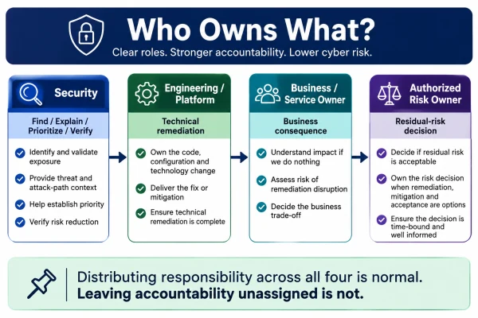
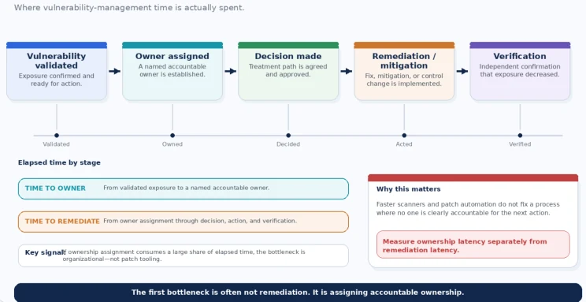

Why vulnerability management breaks when responsibility is distributed but accountability is not.
Security finds a Critical vulnerability in a customer-facing service.
It is validated.
The exposure is real.
The business consequence is understood.
The remediation ticket is raised.
Then the conversation starts.
Engineering says:
“The affected component sits in Product’s roadmap. It isn’t ours to change.”
Product says:
“The fix requires funding that isn’t in this quarter’s plan.”
Operations says:
“There is no safe change window before the release freeze.”
Security escalates.
Thirty days later, roughly the same conversation happens again.
Nobody in that loop is necessarily wrong.
Engineering may genuinely not control the dependency.
Product may genuinely have competing priorities.
Operations may genuinely be protecting service availability.
Security may genuinely be escalating material exposure.
And the vulnerability is still open.
This is not a discovery problem.
It is not a severity problem.
It is not even primarily a patching problem.
It is what happens when an organization distributes responsibility across several teams without assigning accountability to any of them.
Responsibility and accountability are not the same word
Responsibility means:
“I have a role to play.”
Accountability means:
“The outcome is mine.”
That distinction sounds simple.
In vulnerability management, it is often the difference between action and drift.
Security finds the vulnerability.
Engineering assesses it.
Product discusses prioritization.
Operations reviews change risk.
Architecture considers alternatives.
Risk reviews an exception.
Everybody does something.
And still nobody owns whether the exposure is actually reduced.
That is the failure mode.
A vulnerability can have ten participants and still have no owner.
Security has an important job. It is not all of the jobs.
Security should be accountable for doing several things extremely well:
finding meaningful exposure,
explaining it clearly,
helping establish priority,
adding threat and attack-path context,
challenging weak assumptions,
escalating when necessary,
and verifying whether the chosen intervention actually reduced exposure.
Those are significant responsibilities.
But Security often does not control:
the source code,
the application roadmap,
the production deployment,
the maintenance window,
the infrastructure budget,
the vendor contract,
the product retirement decision,
or the business process depending on the technology.
So when someone says:
“Security owns vulnerability management.”
I think we need to ask what that actually means.
If it means Security owns the program, that can make sense.
If it means Security owns the standard, prioritization methodology, governance, reporting, escalation, and verification, that can make sense.
But if it means Security owns the outcome of every vulnerability regardless of who controls remediation, then we have created:
accountability without authority.
That is structurally weak.
Security can describe the fire. It cannot always pour the water.
Why this ownership model quietly breaks behaviour
Most organizations do not create this problem deliberately.
It accumulates.
Security owns the scanner.
Security owns the dashboard.
Security owns the SLA.
Security owns the vulnerability meeting.
Security owns the escalation path.
So eventually Security becomes the default owner of the outcome.
But Security still cannot change the code.
Now ask:
Whose metric goes red when remediation is late?
Often Security’s.
Who gets asked why vulnerabilities remain open?
Often Security.
Who receives the escalation?
Often Security.
Yet the fix may depend on:
Engineering capacity,
Product prioritization,
Operations approval,
Architecture redesign,
Vendor action,
or executive funding.
The organization has separated accountability from authority.
That matters because incentives follow structure.
Shared responsibility needs aligned accountability
Organizations often say:
“Security is everyone’s responsibility.”
I agree with the intention.
But shared responsibility cannot mean undefined accountability.
Engineering contributes to security.
Product contributes.
Operations contributes.
Architecture contributes.
Security contributes.
The business contributes.
That is normal.
What matters is whether someone still owns the outcome.
Now look at the scorecards.
Engineering may be measured on delivery.
Operations on availability.
Product on roadmap commitments.
Security on vulnerability SLA compliance.
Then a remediation request competes with all four.
Every team can behave completely rationally against its own objectives while the vulnerability remains unresolved.
Security escalates because its metric is red.
Engineering protects delivery capacity.
Operations protects stability.
Product protects committed features.
Nobody necessarily behaves badly.
The operating model is producing exactly the behaviour its incentives encourage.
Shared responsibility should increase participation. It should not erase accountability.
If a product team owns the service, material security exposure in that service should appear in the health of the product—not live indefinitely as an external Security problem.
If remediation requires a platform change, the platform owner should see that work as part of operating the platform.
If funding prevents remediation, the decision belongs with the budget owner.
And if leadership consciously decides to carry residual exposure, an authorized risk owner should own that decision.
When accountability and authority sit in different places, vulnerability management becomes negotiation instead of execution.
Secure by Design gets one thing very right
CISA’s Secure by Design guidance is primarily aimed at software manufacturers, but the principle generalizes well:
security outcomes should be owned by the organizations and teams that create and operate the technology, rather than pushing the security burden downstream. [1]
That idea applies internally too.
If a team owns a customer-facing product, security should not be something performed to that product by another function.
If a platform team controls a critical technology layer, security debt in that platform cannot remain somebody else’s problem indefinitely.
If an engineering team owns the code, security characteristics of that code belong inside engineering quality—not outside it as a separate Security backlog.
NIST CSF 2.0 reinforces the broader governance principle that cybersecurity roles, responsibilities, and authorities should be established, communicated, and understood. [2]
That is the model I want vulnerability management to follow.
Who owns what?
I would separate four roles.
1. Security
Security owns:
find, explain, prioritize, challenge, escalate, and verify.
Security should make the exposure visible and understandable.
It should help establish how urgent the exposure is.
It should challenge weak assumptions.
And it should verify whether the selected treatment actually reduced attackability.
Security should not disappear after raising a ticket.
But neither should it automatically inherit the fix.
2. Engineering / Platform
The team that controls the vulnerable component owns the technical remediation action.
If your team controls:
the code,
container,
configuration,
infrastructure,
library,
identity integration,
network control,
or platform,
then your team normally owns the technical change required to reduce exposure.
That might mean:
patch,
upgrade,
rebuild,
reconfigure,
segment,
replace,
or redesign.
3. Business / Service Owner
The business or service owner owns the business consequence.
Technical remediation can create:
downtime,
customer disruption,
revenue impact,
safety implications,
or operational instability.
The service owner should understand both sides:
what happens if we leave the exposure open,
and what happens if remediation goes wrong.
They do not write the patch.
But they cannot be absent from the consequence.
4. Authorized Risk Owner
When the organization cannot immediately eliminate the exposure, someone with appropriate authority must own the decision to carry residual risk.
Security informs the decision.
Engineering informs feasibility.
The service owner informs consequence.
The authorized risk owner makes the call.
NIST SP 800-39 takes the same broad organizational view: cybersecurity risk management is not confined to the security team; it spans organizational, mission/business, and system levels. [3]
The rule underneath all four is:
The team that discovers the risk should not default into owning the business outcome simply because nobody else claimed it.

Distributing responsibility across all four is normal. Leaving accountability unassigned is not.
Ownership should follow control
Here is the simplest rule I know:
The team that controls the lever required to reduce exposure should own the corresponding action.
If the fix requires code:
Engineering.
If it requires a platform upgrade:
Product or Platform.
If it requires a network control:
Infrastructure or Network.
If it requires replacing unsupported technology:
Technology leadership and the budget owner.
If it requires accepting business consequence:
Authorized risk owner.
If it requires independent verification:
Security.
This is not about designing the perfect RACI matrix.
It is about stopping one function from being held accountable for decisions it has no authority to make.
What happens when ownership genuinely is unclear?
Sometimes the ownership dispute is real.
A shared library supports six applications.
A platform was inherited through acquisition.
A legacy environment predates the current organizational structure.
A service crosses cloud, identity, network, and application teams.
Those are legitimate boundary problems.
But:
“Ownership is unclear” should not be allowed to become a permanent status.
I would set an explicit escalation path.
If ownership is unclear inside one business unit, escalate to that unit’s technology leader within a fixed window.
If ownership crosses business units, escalate to the executive or architecture authority responsible for cross-functional technology risk.
If funding is the blocker, stop describing it as a vulnerability-management delay.
It is now a:
funding decision.
Put it in front of the budget owner.
And if the real answer is:
“This asset has no clear owner.”
that is the finding.
A materially important system with no accountable owner is already a governance problem before the vulnerability is even considered.
“Ownership unclear” should have an SLA too
Organizations create SLAs for remediation.
Critical within X days.
High within Y days.
But what about assigning an owner?
Imagine a Critical vulnerability is validated on Day 1.
The ticket moves between teams.
Application says Platform.
Platform says Vendor.
Vendor says Product upgrade.
Product says funding.
By Day 24, the vulnerability is still open.
The dashboard says:
“Open for 24 days.”
But the more useful story may be:
21 of those days were spent deciding whose problem it was.
That changes the management conversation.
I would measure:
Time to Assigned Owner
from:
validated exposure
to:
named accountable owner.
A vulnerability can have a reasonable remediation SLA and still have a terrible ownership process

If owner assignment consumes most of the timeline, faster patch tooling will not solve the real bottleneck.
Metrics that reveal orphaned exposure
A vulnerability count does not tell me whether ownership is working.
I would add four measures.
Time to Assigned Owner
How quickly does a validated material exposure acquire a named accountable owner?
Orphaned Exposure
What percentage of material findings currently have no valid owner?
Ownership Escalation Rate
Which teams or business units repeatedly need leadership intervention before accountability is established?
That does not automatically mean poor behaviour.
It may reveal:
unclear organizational boundaries,
capacity constraints,
legacy technology,
poor asset ownership,
or funding problems.
But leadership should know.
Security-Carried Findings
How many material findings are functionally carried by Security simply because no operational or business owner ever took accountability?
That number should trend toward zero.
Security may administer the workflow.
It should not quietly become the owner of unresolved technology risk across the enterprise.
Acquisitions expose this problem quickly
M&A makes ownership ambiguity visible.
You inherit:
applications,
vendors,
technical debt,
different operating models,
legacy platforms,
security culture,
and sometimes systems whose original owners no longer exist.
The scanner works perfectly.
The vulnerability appears.
Then come the harder questions:
Who owns the service?
Who funds the upgrade?
Who has change authority?
Who accepts the residual risk?
Who retires the platform?
Those questions can take longer than identifying the vulnerability.
That is why vulnerability management during integration is as much an organizational mapping exercise as a technical one.
Before asking:
“How many Critical vulnerabilities did we inherit?”
I would also ask:
“How many critical services did we inherit without a clear accountable owner?”
That second number may explain the first six months of remediation performance better than the scanner ever will.
Tooling does not fix missing accountability
Better integrations help.
Automated routing helps.
AI-generated remediation guidance may help.
Workflow orchestration helps.
But automation can only route based on the ownership model it has been given.
If the CMDB is wrong,
the service owner is outdated,
the application has no real owner,
or the shared dependency spans several teams,
automation simply moves ambiguity faster.
Automation can move ownership faster. It cannot create ownership where none exists.
That is why tooling should sit on top of the operating model.
Not substitute for one.
The CISO should own the system, not everybody’s remediation backlog
This distinction matters.
I do think the CISO should be accountable for whether the vulnerability-management system works.
That includes:
standards,
governance,
prioritization methodology,
visibility,
escalation,
challenge,
verification,
and executive reporting.
If ownership repeatedly fails, the CISO should surface it.
If teams ignore material exposure, the CISO should escalate it.
If risk is silently accumulating, the CISO should make it visible.
But that does not mean the CISO should own every technical remediation action.
A useful distinction is:
Security owns the integrity of the vulnerability-management system. Technology and business owners own the actions and consequences inside that system.
That is a much healthier accountability model.
Bring this back to FIND → OWN → DECIDE → ACT → VERIFY
Article 1 introduced:
FIND → OWN → DECIDE → ACT → VERIFY
This article is really about taking the second word seriously.
OWN
Most programs are reasonably good at FIND.
Scanners.
Cloud tools.
Code scanning.
Pen tests.
Attack-surface management.
Threat intelligence.
Then they rush to DECIDE.
How severe?
How exploitable?
How urgent?
What treatment?
But there is a step in between:
Who owns moving this exposure to an outcome?
Skip that step and everything downstream becomes fragile.
DECIDE becomes a meeting.
ACT becomes a ticket.
VERIFY becomes a dashboard update.
And the vulnerability remains.
Ownership is not administrative metadata. It is part of the control system.
What I would require for every material exposure
Before a material vulnerability leaves triage, I would want five things.
1. A named accountable owner
Not just an assigned queue.
2. The lever they control
Code?
Platform?
Budget?
Change window?
Risk authority?
Why are they the right owner?
3. A decision date
When will the treatment decision be made?
Not necessarily the remediation date.
The decision date.
4. An escalation path
If the owner cannot act, who has authority to resolve the blocker?
5. A verification owner
Who independently confirms that exposure actually fell?
That last point matters.
The team performing remediation should not be the only source of evidence that remediation worked.
What I would tell the board
I would not take a board slide saying:
“We have 4,800 open vulnerabilities.”
without being able to answer:
How many material exposures have no accountable owner?
How long does owner assignment take?
Which business units repeatedly carry orphaned exposure?
Where is remediation blocked by funding rather than technology?
Where is Security still carrying risk because operational ownership failed?
Which recurring ownership disputes point to an organizational-design problem?
That turns the discussion from:
“Why is Security not closing vulnerabilities?”
to:
“Where is the organization failing to act on known exposure?”
That is a much more useful board question.
My position
Security’s job is to make consequential exposure:
visible,
understandable,
prioritized,
challengeable,
and:
verifiably reduced.
It is not to absorb accountability for every business and technology decision required to make that happen.
The team that controls the code, architecture, service, budget, or change window must own the action required to reduce the exposure it controls.
Security can find it.
Explain it.
Prioritize it.
Escalate it.
Challenge it.
Verify it.
But when Security becomes the default owner of every unresolved finding, the organization loses one of its most important signals:
who is actually preventing the risk from being reduced?
And that is the signal leadership needs.
Because:
A vulnerability without an accountable owner is not being managed. It is being observed.
Monday-morning takeaway
Pull ten material findings currently stuck between teams.
For each one:
assign a named accountable owner,
identify the lever they control,
set the next decision date,
and establish where the issue escalates if they cannot act.
Then measure:
Time to Assigned Owner
alongside:
Time to Remediate.
You may discover that your biggest vulnerability-management bottleneck has very little to do with vulnerability technology.
And everything to do with organizational design.
Next in the series
What the Board Should Actually See
Most vulnerability dashboards show activity.
Findings.
Severity.
SLAs.
Closure rates.
Boards do not need a better scanner report.
They need to understand:
consequential exposure,
ownership,
accepted risk,
remediation constraints,
and:
whether management decisions are actually reducing attackability.
That is where I want to go next.
References
[1] Cybersecurity and Infrastructure Security Agency, FBI, NSA, and international partners. Shifting the Balance of Cybersecurity Risk: Principles and Approaches for Secure by Design Software. https://www.cisa.gov/resources-tools/resources/secure-by-design
[2] National Institute of Standards and Technology. (2024). The NIST Cybersecurity Framework (CSF) 2.0. https://www.nist.gov/cyberframework
[3] Joint Task Force Transformation Initiative. (2011). Managing Information Security Risk: Organization, Mission, and Information System View. NIST Special Publication 800-39. https://csrc.nist.gov/pubs/sp/800/39/final